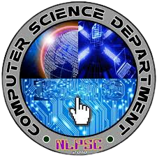

III. Module and Unit Topics
This course has the following modules based on the prototype syllabus given in
CMO 25, s. 2015.
- Module 1: OVERVIEW OF EMERGING TECHNOLOGIES. This module aims to
introduce to you the concept of applications development and emerging
technologies, how they developed and how it is differentiated with existing and
developing technologies. It also covers the potential applications of these ET
along education, business, health and society. Moreover, Industry 4.0 and
smart factory are likewise introduced in this module.
- 2: REQUIREMENTS ANALYSIS AND MODELING. This module aims to
deepen your understanding about requirements analysis and modeling. The
knowledge area is concerned with the acquisition, analysis, specification,
validation and modeling of software requirements. It presents the major
categories of software requirements, techniques of gathering requirements,
the characteristics of good requirements, and modeling user -defined
requirements.
- 3: DESIGN PRINCIPLES AND PATTERNS. This module aims to
strengthen your technical know-how on how software designs principles and
patterns were implemented from simple to more complex software solutions.
In this module, you will be introduced to design principles and patterns,
emphasizing on the SOLID principle and design patterns catalogs as applied in
some object-oriented systems.
- 4: PROTOTYPING AND QUALITY ASSURANCE. This module aims to
present to you some developmental concepts and tools along software design
and developments. This module gives emphasis on types of prototypes, phases
of prototype development and designing prototypes of web, mobile, and
business information systems.
- 5: SOFTWARE TESTING AND DEPLOYMENT.This module aims to
impart understanding on the conduct of software testing and deployment. In
this module, it highlights types of software testing, areas for system testing,
and developing a test plan. Likewise, it presents concepts about software
deployment process and areas for consideration for a deployment plan in
preparation for the development of a deployment plan template.
- Module 6: ETHICAL AND LEGAL CONSIDERATIONS.This module aims to
deepen your understanding about ethical and legal issues in the light of
applications development and emerging technologies. Specifically, it presents
understanding between ethics and law, IT professional code of ethics, various
ethical and legal considerations within the computing environment.